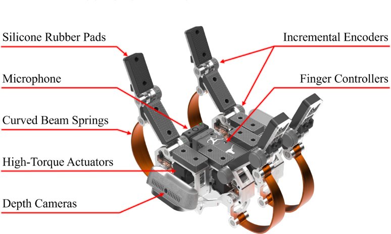

Advanced Robotic Physical Therapy System
Alexander Ambrose, Yiheng Ji, Luis Sentis
Human Centered Robotics Laboratory, UT Austin, April 2026
Work done during internship at Roboligent, Inc.
A robotic system for hands-on physical therapy. Clinicians demonstrate exercises with a wearable tool carrying the ANTERO Gripper, then an Optimo manipulator reproduces them while a safety node monitors human pose and interaction forces. A pilot study with able-bodied participants found the system mostly usable and safe, and identified improvements needed before clinical trials.